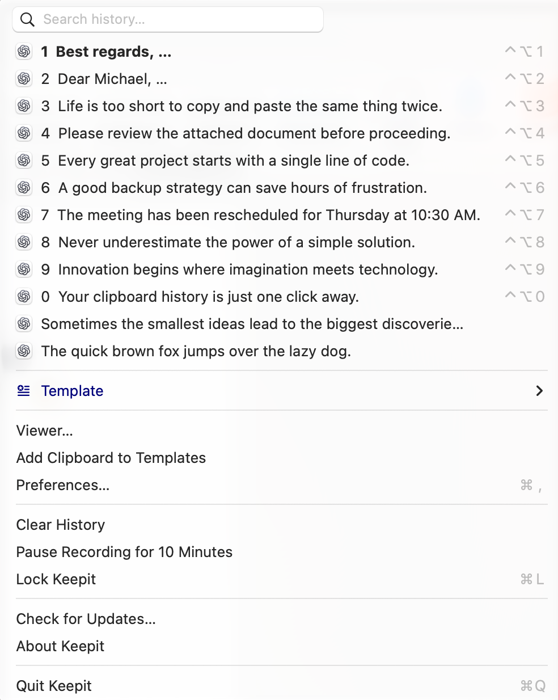
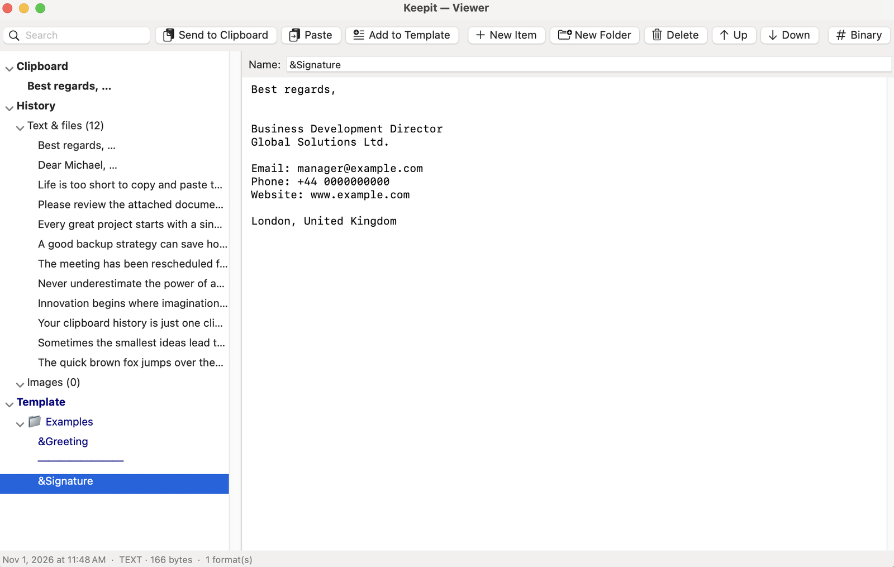
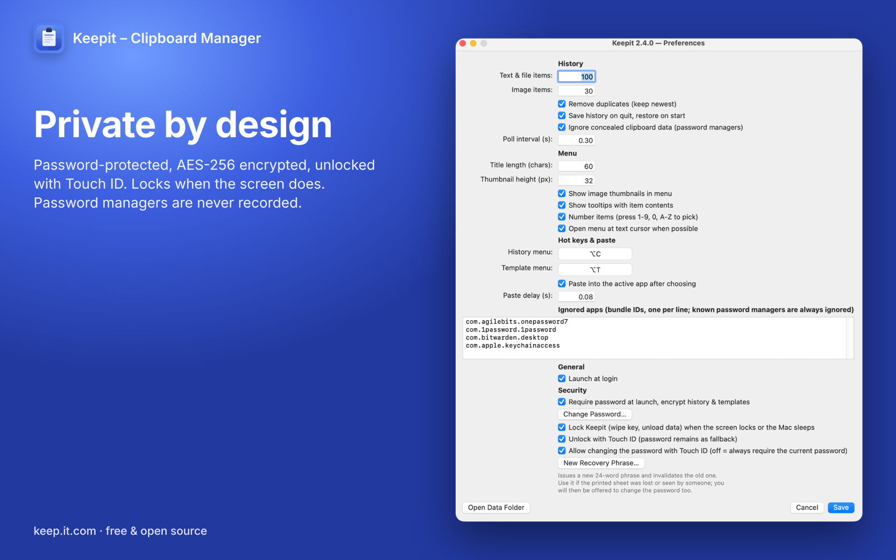

Everything you copy,
one hot key away.
Keepit keeps a history of everything you copy on your Mac and pastes any of it back with a single key press. Templates for the text you type every day. Locked with Touch ID, encrypted on disk, never leaves your Mac.
Download for macOS
Built for the keyboard
Press a hot key, type a number, keep typing. Keepit stays out of your way until you need it.
⌥CHistory menu
Opens at your text cursor with everything you copied recently. Pick with 1–9, 0, A–Z or the mouse — it's pasted where you were typing.
⌥TTemplates
Signatures, addresses, canned replies, snippets — in folders, with separators and shortcut letters. Give any template its own hot key.
Text, images, files
Rich text, screenshots with thumbnails, file lists. Duplicates are merged; text and images have their own history rings.
The Viewer
Browse history and templates in a tree, edit in place, inspect every clipboard format — even as a hex dump. Drag history into templates.
Menu bar app
No Dock icon, no windows unless you ask. Launches at login. Per-app paste key overrides for the apps that need them.
Updates itself
Signed and notarized by Apple. Checks GitHub Releases once a day and installs updates in one click.
Browse, edit, organize
The Viewer shows the live clipboard, the history split into text and images, and your template tree — all editable. Every item expands into its formats.


Private by design
No account, no cloud, no analytics, no network. Everything stays in one folder on your Mac.
Encrypted at rest
Turn on a password and your history and templates are stored AES-256-GCM encrypted (PBKDF2, 200 000 rounds). The key is wiped from memory when Keepit locks — on demand, when the screen locks, or when the Mac sleeps.
Touch ID & recovery phrase
Unlock with a fingerprint; the password stays as fallback. A 24-word recovery phrase, shown once and printable, opens your data if you ever forget the password.
Password managers are never recorded
Copies from 1Password, Bitwarden, KeePassXC, Apple Passwords and others are ignored, as is anything marked concealed by the copying app.
Made by the team behind it.com
Keepit is a free, open-source project from the people who run the it.com domain zone — the home for IT people, products and companies online. Keepit lives at keep.it.com; your project could live at yourname.it.com.
Get your .it.com domainQuestions
Why does Keepit ask for the Accessibility permission?
For two things only: to send ⌘V to the app you were working in after you pick an item, and to find the text cursor so the menu opens next to it. Keepit does not read or monitor other apps. Without the permission it still records history and copies the chosen item to the clipboard — you paste manually.
Does anything leave my Mac?
No. Keepit makes no network connections except the daily update check against GitHub Releases (the App Store edition does not even do that). There is no account, no telemetry, no crash reporting.
What if I forget the password?
Use the 24-word recovery phrase Keepit showed you when you turned protection on, or Touch ID on the same Mac. If you have neither, the data cannot be recovered — by design; there is no master key.
Is it really free? Open source?
Yes and yes. MIT license, source on GitHub. No ads, no in-app purchases, no "pro" tier.
Where does the design come from?
Keepit is a native macOS port of CLCL, the classic Windows clipboard tool by Ohno Tomoaki, rebuilt from scratch in Swift. It is not affiliated with the original author.
Which Macs are supported?
macOS 13 Ventura or later, Apple silicon and Intel. Touch ID unlock needs a Mac with Touch ID.